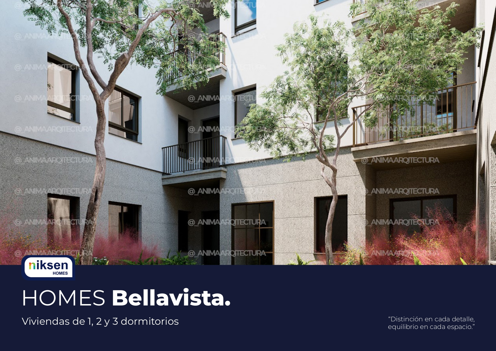
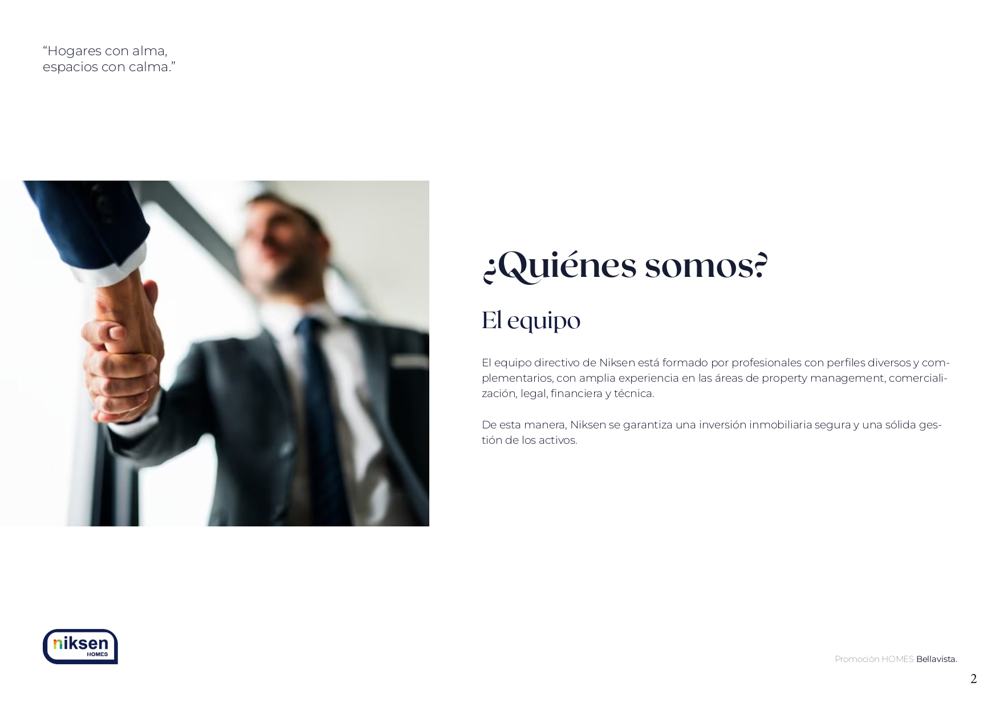
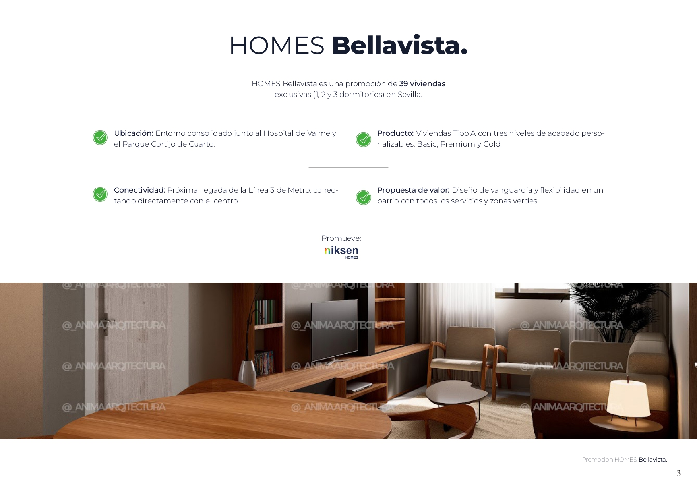
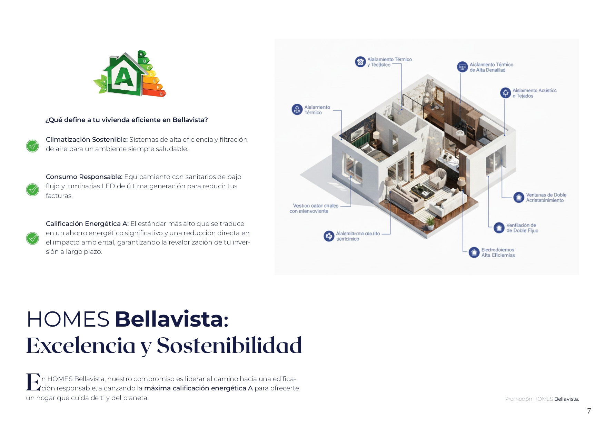
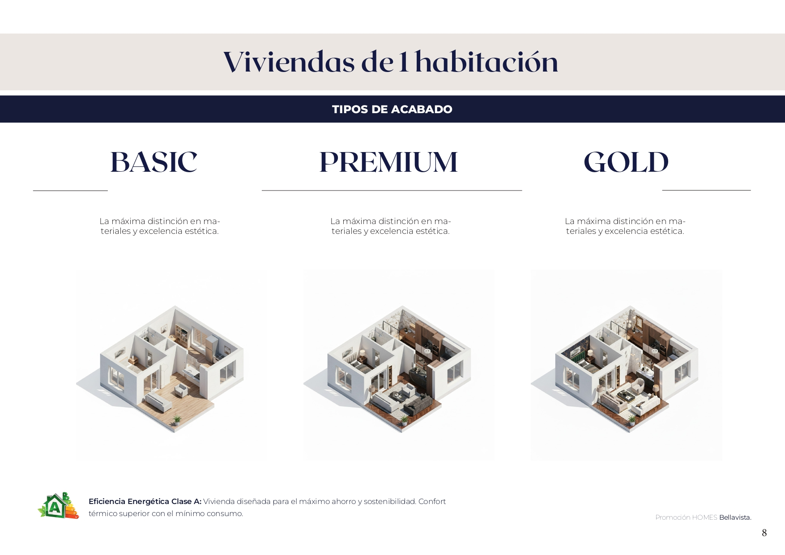
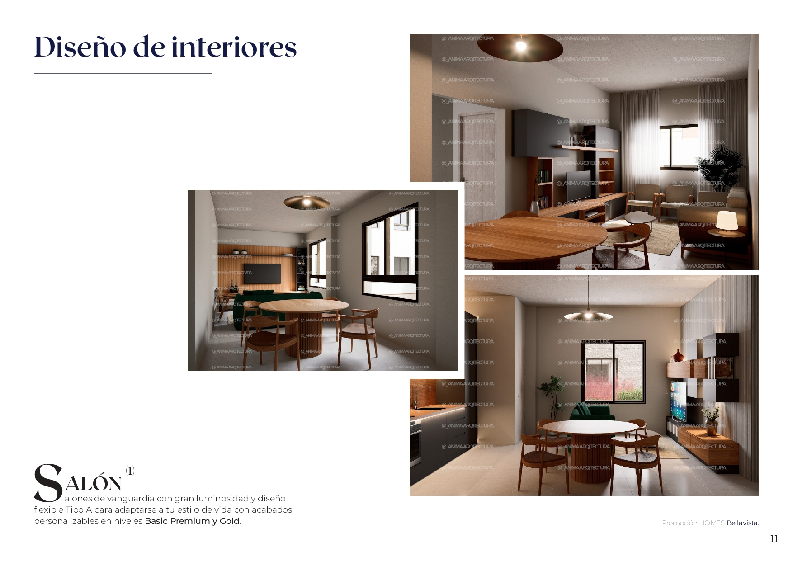
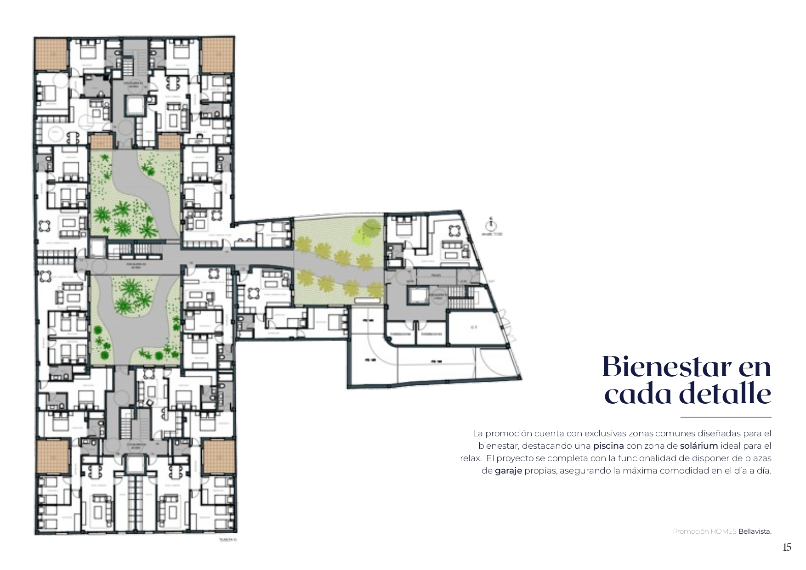
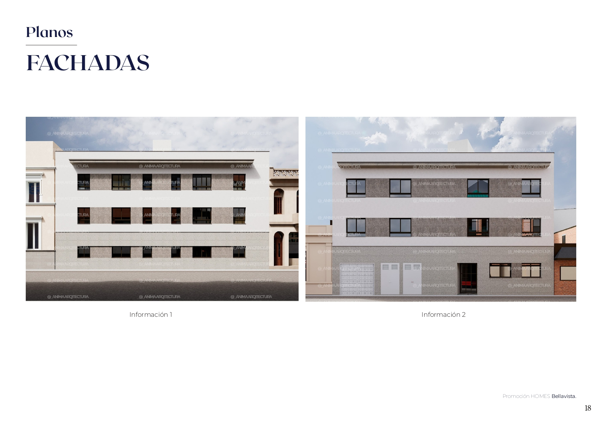
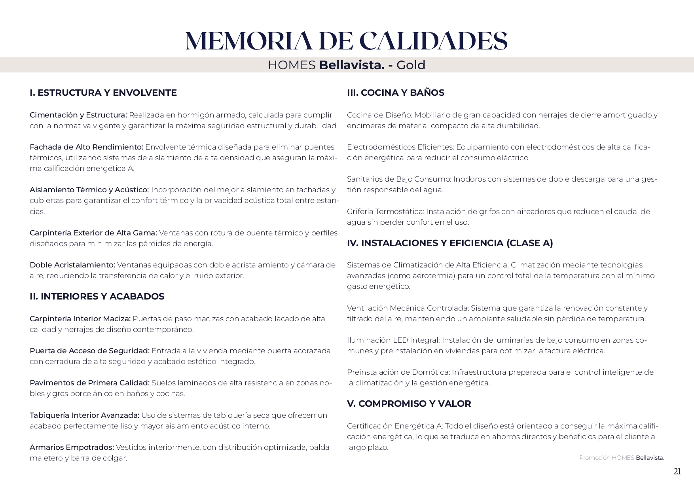
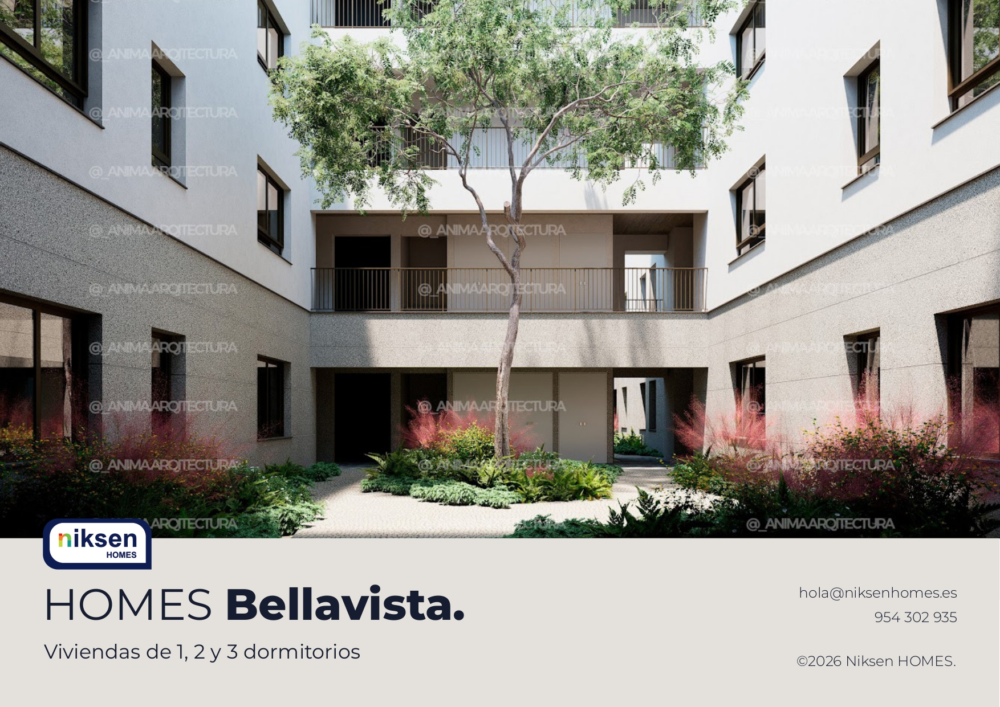

Nixen Homes Bellavista
Creación de dossier de promoción de marca.
↓Proyecto en el marco del Máster en Diseño Gráfico y Desarrollo Web UX/UI de la Cámara de Comercio de Sevilla. Maquetación y diseño del Dossier comercial para la constructora Niksen y su promoción HOMES Bellavista en Sevilla. Gracias al resultado final, mi propuesta fue una de las propuestas a seleccionar por la compañía para su uso comercial.










Mi trabajo consistió en organizar de forma limpia y atractiva toda la información técnica, como los planos de las viviendas y las calidades, usando las imágenes oficiales de la empresa. El principal reto fue lograr que un catálogo con datos arquitectónicos muy complejos resultara visualmente elegante, fluido y fácil de entender para el comprador.